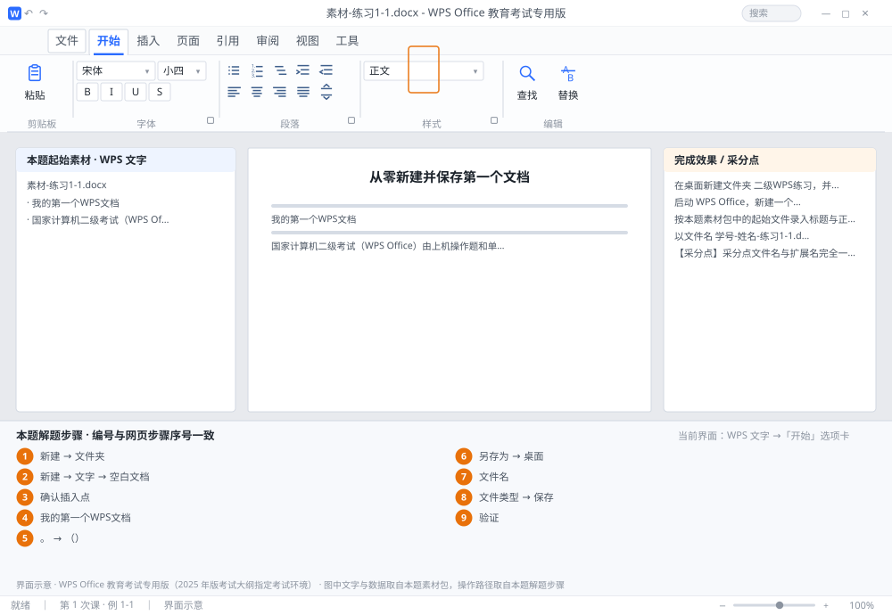

完成比对文档 · 例 1-1
从零新建并保存第一个文档 ｜ 第 1 次课 / WPS 文字 ｜ 网页：入门实操课.html ｜ 考试环境：WPS Office 教育考试专用版（2025 年版考试大纲指定考试环境）
用途 本页按修订后的题目要求与解题步骤生成，是交卷自查的结果基准：
逐项列出每一步应出现的可复核结果，配合模拟操作截图与解题结果文件使用。
它不是素材包的一部分，不会预置答案动作；起始素材仍从本题素材包下载。
一、本题起始素材包
目录：练习素材/练习1-1-新建与保存/ ｜
下载包：练习素材/下载/练习1-1-新建与保存.zip
二、题目要求
- 在桌面新建文件夹 二级WPS练习，并在其中新建子文件夹 课时1。
- 启动 WPS Office，新建一个空白文字文档。
- 按本题素材包中的起始文件录入标题与正文，标题与正文之间按一次 Enter 分段。
- 以文件名 学号-姓名-练习1-1.docx 保存到 课时1 文件夹。
三、解题步骤（编号与下方核对表、截图编号一致）
- 建文件夹。回到桌面，空白处右键 →「新建」→「文件夹」，输入 二级WPS练习 后按 Enter；双击进入，再右键新建一个 课时1 文件夹。（考场同理：先在指定位置把文件夹建好，后面所有保存都往这里存。）
- 启动并新建。双击桌面 WPS Office 图标 → 首页点「新建」→ 选「文字」→「空白文档」；若已有文档窗口打开，直接按 Ctrl+N。
- 确认插入点。新页面左上角有一条闪烁竖线，就是插入点。切换输入法到中文（Ctrl+空格 或 Shift），确认任务栏输入法图标显示"中"。
- 输入标题。打「我的第一个WPS文档」，注意 WPS 三个字母要在英文状态下输入（按 Shift 临时切换），字母之间不要加空格。
- 分段。按一次 Enter，屏幕上出现一个 ¶ 段落标记，光标跳到下一段行首。然后输入正文，句末用中文句号「。」，括号用全角「（）」。
- 保存（关键一步）。按 Ctrl+S，首次保存会弹出「另存为」对话框 → 左侧选「桌面」→ 双击 二级WPS练习 → 双击 课时1；
- 「文件名」输入 学号-姓名-练习1-1（不要自己再打 .docx）；
- 「文件类型」选 WPS 文字 文件(*.docx) → 点「保存」。
- 验证。看窗口标题栏是否变成 学号-姓名-练习1-1.docx，标题栏没有"*"或"未保存"字样即成功。再打开文件夹确认文件真的在里面。
四、完成效果 / 采分点
采分点文件名与扩展名完全一致 · 保存位置正确 · 标题与正文是两个独立段落（用 Enter，不是空格顶下来） · 中文全角标点
五、逐项完成核对表
| 步骤 | 关键操作路径 | 应出现的结果（可复核） |
|---|
| 1 | 建文件夹 | 「新建」、「文件夹」 |
| 2 | 启动并新建 | 「新建」、「文字」、「空白文档」 |
| 3 | 确认插入点 | 确认插入点 |
| 4 | 输入标题 | 「我的第一个WPS文档」 |
| 5 | 分段 | 「。」、「（）」 |
| 6 | 保存（关键一步） | 「另存为」、「桌面」 |
| 7 | 「文件名」输入 学号-姓名-练习1-1（不要自己再打 .docx） | 「文件名」 |
| 8 | 「文件类型」选 WPS 文字 文件(*.docx) → 点「保存」 | 「文件类型」、「保存」 |
| 9 | 验证 | 学号-姓名-练习1-1.docx |
六、模拟操作截图

界面示意 · WPS Office 教育考试专用版 · 橙色编号与本题解题步骤序号一致；
图中文字与数据取自本题素材包，功能入口取自本题解题步骤。
核对方法：按网页解题步骤完成并另存自己的成稿后，逐行比对本表第 3 列的
参数、公式、区域、文件名与对象数量；再对照网页「完成效果 / 采分点」检查版式是否一致。